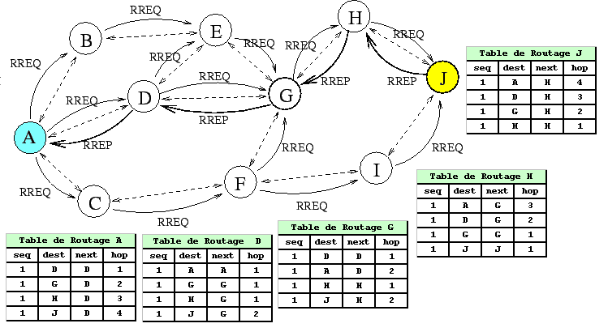

Sources / Liens utiles
- Balabonski Terminale
- https://www.lyceum.fr/tg/nsi/3-architectures-materielles-systemes-dexploitation-et-reseaux/3-protocoles-de-routage/
- http://nsi4noobs.fr/IMG/pdf/c3_tnsi_routage.pdf
- https://glassus.github.io/terminale_nsi/T5_Architecture_materielle/5.3_Protocoles_de_routage/cours/
- https://pixees.fr/informatiquelycee/n_site/nsi_term_archi_routage.html
- TP Filius : https://nsirennes.fr/os-archi/reseaux/
Cours - Protocoles de routage¶
Rappels sur l'adressage IP¶
Voici une petite activité (sous la forme d'un notebook) de rappel sur l'adressage IP et les masques de sous-réseau :
Adresses broadcast et multicast
- Broadcast : Cette adresse vous permet d'appeler tous les hôtes (interfaces) à l'intérieur d'un sous-réseau. Une adresse IP broadcast est par exemple
192.168.100.255et un broadcast MAC estFF:FF:FF:FF:FF:FF. - Multicast : Ce type d'adresse permet d'appeler un groupe spécifique d'hôtes (interfaces) dans un sous-réseau.
Rappels - Qu'est-ce qu'un réseau ?¶
Vous pouvez dans un premier temps essayer de faire l'exercice 1 pour tester vos connaissances sur les composants d'un réseau.
Voici une petite vidéo résumant la constitution d'un réseau (et plus généralement du réseau mondial) :
Rappels modèles OSI et TCP/IP¶
Voici un rappel des modèles en couches (en 7 couches avec le modèle OSI et en 4 couches avec le modèle TCP/IP,également appelé "modèle internet".)

Schéma plus détaillé - Encapsulation des données (modèle TCP/IP)

Protocoles IP et TCP
Les deux protocoles qui nous intéressent particulièrement sont :
- Le protocole IP (COUCHE RÉSEAU) qui consiste à attribuer à chaque machine une adresse IP unique pour l’identifier sur le réseau, et ainsi transmettre l'information sous la forme de paquets comportant l'indication de l'adresse IP source et de l'adresse IP de destination.
- Le protocole TCP (COUCHE TRANSPORT) qui permet d’assurer la communication de l’information en la découpant en segments, comportant l'indication du port source et du port de destination, et en s’assurant que tous les paquets soient bien reçus et conformes à l’information envoyée. (Il existe un protocole plus rapide mais qui, contraiement à TCP, n'assure pas que toutes les données soient reçues : le protocole UDP.)
Voici un rappel de la manière dont s'effectue l'établissement d'une connexion ainsi que la transmission des données avec le protocole TCP (source de l'image):

Lorsqu'un paquet n'est pas correctement transmis, il est de nouveau envoyé (source de l'image):
Introduction¶
Un réseau informatique permet la connexion entre différentes machines afin de faciliter la communication entre elles. Le modèle de communication généralement utilisé est le modèle client-serveur, qui permet aux clients d'échanger des paquets d'informations avec les serveurs. La notion de "client" est large, pouvant désigner aussi bien une application qu'une machine exécutant cette application. De même, le terme "serveur" peut faire référence à l'ordinateur hébergeant un service ou au logiciel fournissant ce service.
Les paquets de bits échangés sont les unités de base transitant sur le réseau physique. Ils résultent de la fragmentation des données à transmettre, telles que des pages web, des courriels ou des vidéos. Ces paquets sont envoyés séparément sur le réseau, et l'information initiale est reconstituée une fois qu'ils atteignent leur destination, que ce soit du côté client ou serveur.
En plus des clients et des serveurs, un réseau informatique est composé de routeurs, pouvant être de deux types : des routeurs d'accès (en bordure de réseau) ou des routeurs internes.
Ces machines ont pour rôle de relayer les paquets dans le réseau pour les acheminer vers leur destination finale. Un routeur fait le lien entre deux réseaux. Les clients et les serveurs sont connectés aux routeurs d'accès via des réseaux locaux (en utilisant par exemple le Wi-Fi ou l'Ethernet). Les routeurs internes sont reliés entre eux sur de plus longues distances à l'aide de fibres optiques, de câbles téléphoniques, de liaisons par satellite, etc. L'interconnexion de ces routeurs via ces liens forme la topologie du réseau.
Par exemple, la figure ci-dessous représente la topologie d'un réseau avec six routeurs.
Les routeurs R1 et R6 sont des routeurs d'accès permettant aux machines Client et Serveur d'accéder au réseau. Les autres routeurs (R2 à R5) sont des routeurs internes. Les adresses IP des machines sont indiquées par une paire sous-réseau/masque. Par exemple, les routeurs R1 et R3 sont connectés à un sous-réseau avec l'adresse 10.1.1.0 et un masque de 30, signifiant que seuls les deux bits de poids faible de l'adresse peuvent être utilisés pour associer des adresses IP aux machines.
Lorsqu'un routeur reçoit un paquet, il analyse l'adresse de destination et choisit vers quel routeur voisin transmettre le paquet pour le faire progresser vers sa destination. Cette décision est prise en se basant sur la table de routage du routeur, qui associe les adresses de destination à des adresses de routeurs voisins. Ainsi, le paquet progresse de routeur en routeur jusqu'à atteindre le client ou le serveur auquel il est destiné.
Par exemple, si un client souhaite envoyer un message au serveur, il le transmet à son routeur d'accès (R1), qui le renvoie au routeur R3. R3 choisit ensuite le prochain routeur à utiliser (R2, R4 ou R5) en se basant sur sa table de routage. Ce processus se répète à chaque routeur jusqu'à ce que le paquet parvienne au routeur R6, qui le délivre ensuite au serveur.
Principe du routage¶
Si l'hôte de destination et l'hôte source sont sur le même réseau, les paquets de données circulent directement entre eux sur le support local de niveau 2 (deuxième couche du modèle OSI) via des commutateurs (switchs), sans nécessiter l'intervention d'un routeur. Les commutateurs construisent une table d'adresses MAC des machines IP connectées à eux, utilisant ces adresses pour commuter les trames.
En revanche, si l'hôte source et l'hôte de destination ne sont pas sur le même réseau, le réseau local dirige le paquet de la source vers son routeur de passerelle de niveau 3 (troisième couche du modèle OSI). Le routeur analyse la partie réseau de l'adresse de destination du paquet et le dirige vers l'interface appropriée. Si le réseau de destination est directement connecté à ce routeur, le paquet est transmis directement à l'hôte de destination. Dans le cas contraire, le paquet est envoyé à un second routeur, qui agit comme le routeur de tronçon suivant. Le transfert du paquet devient alors la responsabilité de ce second routeur. De multiples routeurs ou sauts tout au long du chemin peuvent traiter le paquet avant qu'il n'atteigne sa destination. Contrairement aux commutateurs, les routeurs se basent sur les adresses IP pour le transfert des données.
Aucun paquet ne peut être acheminé sans route. Que le paquet provienne d'un hôte ou soit dirigé par un routeur intermédiaire, le routeur a besoin d'une route pour déterminer son itinéraire. Si aucune route n'existe vers le réseau de destination, le paquet ne peut pas être transféré.
Les routeurs utilisent des tables de routage, qui peuvent être établies de deux manières :
- par un routage statique : chaque ligne doit être renseignée "à la main". Cette solution est seulement envisageable pour des très petits réseaux de réseaux.
- par un routage dynamique : tout se fait "automatiquement", en utilisant des protocoles tels que RIP (Routing Information Protocol) ou OSPF (Open Shortest Path First)==, qui vont permettre de "découvrir" les différentes routes automatiquement afin de pouvoir remplir la table de routage tout aussi automatiquement.
Une tableau de routage
Voici à quoi ressemble une table de routage (source : Wikipédia) :
| Réseau destination (format CIDR) | Masque | Passerelle | Interface | Métrique |
|---|---|---|---|---|
| 0.0.0.0/0 | 0.0.0.0 | 192.168.0.1 | 192.168.0.100 | 1 |
| 127.0.0.0/8 | 255.0.0.0 | 127.0.0.1 | 127.0.0.1 | 1 |
| 192.168.0.0/24 | 255.255.255.0 | 192.168.0.100 | 192.168.0.100 | 1 |
| 192.168.0.100/32 | 255.255.255.255 | 127.0.0.1 | 127.0.0.1 | 1 |
| 192.168.0.1/32 | 255.255.255.255 | 192.168.0.100 | 192.168.0.100 | 1 |
La métrique est une mesure de la « distance » qui sépare un routeur d'un réseau de destination. Dans le cadre du protocole RIP, on peut l'assimiler au nombre de sauts IP nécessaires pour atteindre le réseau destination (ce qui n'est pas le cas pour le protocole OSPF, où la métrique sera liée au coût des liaisons). Ainsi, un réseau directement lié à un routeur aura une métrique de 0.
Sur votre ordinateur, vous pouvez afficher la table de routage utilisée par votre système en utilisant les commandes suivantes :
- Sous Windows :
route printounetsh int ipv4/ipv6 sh route - Sous Unix/OS X : `netstat -rn
- Sous Linux :
ip -4/-6 route
Exemple de table de routage
Voici un exemple de réseau (source : pixees)

Voici par exemple ce que donnerait la table de routage du routeur A, après la mise à jour effectuée avec le protocole RIP :
| Réseau | Passerelle | Interface | Métrique |
|---|---|---|---|
| 172.168.0.0/16 | eth0 | 0 | |
| 192.168.7.0/24 | eth1 | 0 | |
| 172.169.0.0/16 | eth2 | 0 | |
| 10.0.0.0/8 | 192.168.7.2/24 | eth1 | 1 |
À votre tour, donnez la table de routage du routeur G.
Principe des algorithmes de routage¶
Un ensemble de réseaux interconnectés par des routeurs peut être représenté sous forme de graphe, où chaque routeur est un nœud et chaque connexion entre les routeurs ou entre un routeur et un commutateur constitue une arête. Les algorithmes employés par les protocoles de routage sont ainsi dérivés de la théorie des graphes. Une illustration de ce concept est présentée dans le schéma ci-dessous :

L'objectif d'un algorithme de routage est de déterminer un chemin dans ce graphe, établissant ainsi une liaison entre l'émetteur et le destinataire. Bien qu'il existe de nombreux algorithmes pour trouver le chemin le plus court entre deux points d'un graphe, ces derniers sont rarement utilisés de manière directe par les algorithmes de routage.
Les algorithmes de routage peuvent également prendre en considération les performances des divers chemins entre deux routeurs. La mise à jour des tables de routage permet alors d'identifier des chemins plus courts ou plus rapides pour acheminer des données vers une adresse IP spécifique. Pour y parvenir, on peut attribuer un poids (pondération) à chaque arête, représentant le coût de transmission entre deux routeurs, en fonction du débit de la liaison (c'est ce que l'on verra avec le protocole OSPF).
Protocole « à vecteur de distances » - RIP¶
Le nombre de routeurs dans un réseau est souvent trop élevé pour envisager une configuration manuelle des tables de routage. En effet, à chaque fois qu'un élément du réseau tombe en panne ou qu'une modification est apportée à sa topologie (comme l'ajout d'une nouvelle liaison ou d'un nouveau routeur), il devient nécessaire de recalculer toutes les routes et de mettre à jour les tables de routage de chaque routeur. Pour réaliser cette tâche, il serait également nécessaire d'envoyer toutes les données relatives à l'état des liaisons et des routeurs vers un opérateur unique, chargé de calculer les nouvelles routes. Outre les inconvénients de centraliser cette tâche, il faut également garantir que les informations sur l'état du réseau peuvent être transmises sans problème à cet opérateur. Malheureusement, les moyens de communication utilisés à cette fin peuvent eux aussi tomber en panne.
Pour toutes ces raisons, l'approche consiste à automatiser ce processus en permettant aux routeurs de mettre à jour leurs tables de routage sans intervention humaine. Ainsi, en plus de la transmission des paquets, les routeurs échangent des informations sur les routes du réseau en fonction de l'état de leurs voisins et de leurs liens de communication. Les règles régissant ces échanges sont définies par un protocole de routage.
Initialement, les informations dont dispose un routeur concernent ses voisins immédiats ainsi que les sous-réseaux auxquels il est connecté. En envoyant régulièrement des messages à ses voisins et en mesurant les temps de réponse de ces machines, le routeur peut déterminer si un autre routeur est en panne ou si la liaison entre eux est rompue. Il peut ensuite diffuser ces informations à tous ses voisins, qui peuvent à leur tour les transmettre à leurs voisins, et ainsi de suite. De cette manière, progressivement, tous les routeurs finissent par partager les mêmes connaissances sur la topologie du réseau. Cependant, pour que l'échange de ces informations soit bien coordonné, les routeurs doivent suivre le même protocole. Dans cette section, nous décrivons le protocole RIP (Routing Information Protocol en anglais), un exemple de protocole utilisé à cette fin.
Principe du protocole RIP
Le protocole RIP s'appuie sur l'algorithme de Bellman-Ford (un algorithme utilisant le principe de programmation dynamique), permettant de calculer les plus courts chemins dans un graphe.
L'algorithme du protocole RIP repose sur le partage d'informations entre routeurs pour déterminer les meilleures routes vers différents sous-réseaux. Chaque routeur communique avec ses voisins en échangeant des vecteurs de distance, c'est-à-dire des couples (adresse, distance), qui représentent la distance en nombre de sauts vers une machine spécifique. Ces échanges permettent aux routeurs de construire et mettre à jour leurs tables de routage.
Dans la phase d'initialisation, chaque routeur transmet les adresses de ses voisins et les distances associées. Ces informations sont utilisées pour former des vecteurs de distance. À partir de là, le protocole RIP continue par des échanges périodiques de demandes et de réponses entre les routeurs. Lorsqu'un routeur reçoit une réponse de son voisin, plusieurs scénarios peuvent se produire :
- Découverte d'une nouvelle route vers un sous-réseau inconnu : le routeur l'ajoute à sa table.
- Découverte d'une route plus courte vers un sous-réseau connu : le routeur met à jour sa table en remplaçant l'ancienne route par la nouvelle.
- Réception d'une nouvelle route plus longue : le routeur ignore cette information.
- Réception d'une route existante, mais plus longue, vers un routeur passant par le même voisin : le routeur met à jour sa table en tenant compte de cette nouvelle route.
Les distances associées aux routes sont ajustées en fonction du chemin parcouru, et la distance maximale est limitée à 15 routeurs intermédiaires. Au-delà de cette limite, la route est ignorée ou supprimée des tables de routage.
En répétant ces échanges et en mettant à jour les tables de routage à intervalle fixe (l'intervalle de mise à jour par défaut pour le RIP est de 30 secondes.), les routeurs convergent vers une vision commune du réseau, déterminant ainsi les meilleures routes pour acheminer les paquets vers leurs destinations.
Un exemple d'application
Si l'on reprend la figure 1 :
Au début du protocole, les tables des routeurs R1 et R3 sont initialisées avec les informations concernant leurs voisins immédiats, à savoir les adresses des sous-réseaux sur lesquels ils sont directement connectés :
- Pour le routeur R1 :
| Réseau | Passerelle | Interface | Distance |
|---|---|---|---|
| 10.1.1.0/30 | eth0 | 0 | |
| 192.168.1.0/24 | wlan0 | 0 |
- Pour le routeur R3 :
| Réseau | Passerelle | Interface | Distance |
|---|---|---|---|
| 10.1.1.0/30 | eth1 | 0 | |
| 10.1.2.0/30 | eth3 | 0 | |
| 10.1.3.0/30 | eth2 | 0 | |
| 10.1.4.0/30 | eth0 | 0 |
Après avoir échangé une demande RIP avec R3, la table du routeur R1 contient les informations suivantes :
| Réseau | Passerelle | Interface | Distance |
|---|---|---|---|
| 10.1.1.0/30 | eth0 | 0 | |
| 192.168.1.0/24 | wlan0 | 0 | |
| 10.1.2.0/30 | 10.1.1.2 | eth0 | 1 |
| 10.1.3.0/30 | 10.1.1.2 | eth0 | 1 |
| 10.1.4.0/30 | 10.1.1.2 | eth0 | 1 |
À votre tour, indiquez les informations contenues dans la table du routeur R3 après son échange avec R1.
Solution
| Réseau | Passerelle | Interface | Distance |
|---|---|---|---|
| 10.1.1.0/30 | eth1 | 0 | |
| 10.1.2.0/30 | eth3 | 0 | |
| 10.1.3.0/30 | eth2 | 0 | |
| 10.1.4.0/30 | eth0 | 0 | |
| 192.168.1.0/24 | 10.1.1.1 | eth1 | 1 |
Si l'on répète ces demandes RIP et en mettant à jour les tables de routages selon l'algorithme décrit précédemment, les routeurs auront finalement la même « vision » du réseau avec les meilleures routes à suivre pour acheminer un paquet.
Par exemple, la table de routage finale du routeur R1 sera la suivante :
| Réseau | Passerelle | Interface | Distance |
|---|---|---|---|
| 10.1.1.0/30 | eth0 | 0 | |
| 192.168.1.0/24 | wlan0 | 0 | |
| 10.1.2.0/30 | 10.1.1.2 | eth0 | 1 |
| 10.1.3.0/30 | 10.1.1.2 | eth0 | 1 |
| 10.1.4.0/30 | 10.1.1.2 | eth0 | 1 |
| 10.1.7.0/30 | 10.1.1.2 | eth0 | 2 |
| 192.168.6.0/24 | 10.1.1.2 | eth0 | 3 |
Détection des pannes
Le protocole RIP doit également inclure un mécanisme permettant de déterminer si une liaison est défaillante. À cet effet, un routeur considère qu'un voisin est en panne s'il ne reçoit pas de réponse à une requête RIP dans un délai spécifique, par défaut fixé à trois minutes. Lorsqu'un routeur détecte qu'un sous-réseau devient inaccessible, il transmet cette information à ses voisins en l'exprimant sous forme d'une route avec une distance infinie. Dans le contexte du RIP, cette distance infinie est représentée par une valeur de 16.
Délai de convergence
Étant donné que les distances maximales ne peuvent dépasser 15 sauts (ou liaisons traversées), les routeurs ne peuvent pas déterminer les chemins les plus courts vers des sous-réseaux nécessitant des routes excessivement longues. Cette restriction limite effectivement l'applicabilité du protocole RIP aux réseaux de petite taille. La fixation de cette limite vise à réduire le délai de convergence du protocole, c'est-à-dire le temps nécessaire pour que tous les routeurs parviennent à une vision uniforme de la topologie du réseau. Une limite plus élevée entraînerait un temps de convergence plus long.
Boucles de routage
Une boucle de routage peut se produire lorsque les informations dans les tables de routage entraînent la circulation continue d'un paquet dans le réseau, l'empêchant ainsi d'atteindre sa destination. Deux solutions sont envisageables pour prévenir ce phénomène :
- garantir que les tables de routage sont toujours correctement configurées pour éviter toute possibilité de boucle,
- permettre aux routeurs de détecter quand un paquet circule en boucle dans le réseau, notamment grâce au TTL (Time-to-Live)).
Le protocole RIP est conçu de manière à prévenir la création de boucles de routage lors de la mise à jour des tables. La limitation imposée sur les distances des routes constitue une première technique. Cependant, cette mesure n'est pas suffisante, et il est nécessaire d'établir d'autres règles pour empêcher ce scénario. Par exemple, la règle du "split horizon" stipule qu'un routeur ne doit pas renvoyer une information à un autre routeur s'il a appris cette information du même routeur. Une autre règle, appelée le temporisateur de retenue (Hold down en anglais), oblige un routeur, qui constate l'indisponibilité d'une route vers un sous-réseau, à ignorer toute information concernant des routes vers ce sous-réseau pendant une certaine période (utilisant un temporisateur à cet effet).
Protocole « à état de liens » - OSPF¶
Présentation¶
Dans la section précédente, nous avons examiné le fonctionnement du protocole RIP, soulignant sa capacité à configurer les tables de routage en privilégiant les routes les plus courtes en termes de nombre de routeurs traversés (nombre de sauts). Malheureusement, cette approche basée sur la distance ne garantit pas l'optimisation des routes en termes de débit, car les caractéristiques des liaisons (fibre optique, satellite, sans fil, etc.) ne sont pas prises en compte dans les échanges d'informations entre les dispositifs via ce protocole. De plus, nous avons noté que le RIP n'était pas adapté aux réseaux étendus, limitant son exploration aux routes de moins de 15 sauts pour réduire le délai de convergence et éviter les boucles de routage.
C'est pour remédier à ces lacunes que le protocole OSPF (Open Shortest Path First) a été développé dans les années 90 par l'IETF (Internet Engineering Task Force), un organisme de normalisation international. La spécificité de l'OSPF réside dans son utilisation de la bande passante des liaisons pour le calcul des meilleures routes. La bande passante, mesurée en bits par seconde (bit/s) ou avec des préfixes tels que kilo (kbit/s) et Mega (Mbit/s), devient ainsi un critère essentiel.
Contrairement au RIP, le nombre de routeurs traversés n'influe plus sur le choix de la route dans OSPF, où la distance est uniquement liée aux coûts des liaisons nécessaires pour relier deux routeurs.
Coût des liaisons
Le coût est défini ainsi :
où \(d\) représente la bande passante en bit/s de la liaison. La valeur de \(10^8\) a été délibérément choisie pour attribuer un coût de 1 à une liaison FastEthernet avec un débit de 100 Mbit/s. Ainsi, une liaison plus lente par satellite à \(50\) Mbits/s aura un coût de 2, tandis qu'un câble Ethernet à \(10\) Mbit/s aura un coût de 10.
Principe du protocole OSPF
Le fonctionnement d'OSPF se découpe en deux étapes majeures.
- Dans la première étape, chaque routeur, après initialisation, cherche à identifier ses voisins pour établir une relation de voisinage.
Le protocole OSPF organise les machines en différentes zones (ensembles de machines), limitant ainsi la recherche de voisins des routeurs à leur zone assignée. La séquence de cette phase pour un routeur R est détaillée comme suit :- R choisit un identificateur unique, tel que sa plus grande adresse IP parmi celles de ses sous-réseaux.
- Le routeur R envoie des messages de type HELLO à travers toutes ses interfaces réseau, contenant son identificateur, le numéro de sa zone, et la liste des identificateurs de ses voisins avec qui il a établi une relation de voisinage.
- Quand un routeur de la zone reçoit un paquet HELLO de R, il vérifie si l'identificateur de R est déjà dans sa liste de voisins.
- Si oui, il envoie un accusé de réception à R pour indiquer qu'il est toujours actif.
- Sinon, il répond en fournissant des informations sur la topologie du réseau.
- R répond de même. Les messages qui contiennent les états des liens sont appelés LSA (Link State Advertisement). Ces messages ne sortent jamais de la zone, et plusieurs échanges sont nécessaires pour synchroniser les connaissances des routeurs dans une zone. Le processus de cette étape initiale est une diffusion (flooding) de l'information de voisinage.
- La deuxième étape d'OSPF implique l'exécution d'un algorithme, au sein de chaque routeur, pour calculer les meilleures routes vers tout autre routeur de la zone. Le coût d'une route, utilisé dans cet algorithme, est la somme des coûts des liaisons entre les routeurs traversés. La meilleure route est celle avec le coût le plus bas, et une fois calculée, elle est enregistrée dans la table de routage du routeur.
Établissement d'une relation de voisinage entre deux routeurs
Avant d'établir une relation de voisinage, les routeurs OSPF traversent plusieurs étapes de changement d'état. Voici quelles sont ces étapes entre deux routeurs :
- État initial : Un routeur reçoit un message Hello de l'autre routeur OSPF.
- État 2-way : Le voisin a reçu le message Hello et a répondu avec un message Hello.
- État Exstart : Le début de l'échange de LSDB (Base de données d'état de lien) entre les deux routeurs. Les routeurs commencent à échanger des informations sur l'état des liens.
- État Exchange : Les paquets DBD (Database Descriptor) sont échangés. Les DBD contiennent des en-têtes LSA (Annonces d'état de lien). Les routeurs utilisent ces informations pour déterminer quels LSA doivent être échangés.
- État Loading : Un voisin envoie des LSR (Link State Requests) pour chaque réseau qu'il ne connaît pas. L'autre voisin répond avec les LSU (Link State Updates) contenant des informations sur les réseaux demandés. Après avoir reçu toutes les informations demandées, l'autre voisin passe par le même processus.
- État Full : Les deux routeurs ont une base de données synchronisée et sont complètement adjacents l'un à l'autre.
En résumé, chaque routeur communique la liste des réseaux auxquels il est connecté au moyen de messages Link-State Advertisements (LSA) propagés progressivement à tous les routeurs du réseau.
L'ensemble des LSA forme une base de données d'état des liens (Link-State Database - LSDB) pour chaque zone (area), identique pour tous les routeurs de cette zone.
Ensuite, chaque routeur utilise l'algorithme de Dijkstra (Shortest Path First), pour déterminer la route la plus rapide vers chacun des réseaux répertoriés dans la LSDB.
Messages LSA, LSU et LSR
Les messages LSA (Link-State Advertisments) sont utilisés par les routeurs OSPF pour échanger des informations topologiques. Chaque LSA contient des données de routage et de topologie, décrivant ainsi une partie du réseau OSPF.
- Lorsqu'il est décidé d'échanger des routes entre deux voisins, ceux-ci envoient réciproquement une liste de tous les LSA présents dans leur base de données topologique respective.
- Chaque routeur examine ensuite sa base de données topologique et envoie un message LSR (Link-State Request) demandant tous les LSA qui ne se trouvent pas dans sa table de topologie.
- L'autre routeur répond avec le LSU (Link-State Update) contenant tous les LSA demandés par son voisin.

Dans l'exemple ci-dessus, après l'initialisation d'OSPF sur les deux routeurs, ces derniers échangent des LSA pour décrire leur base de données topologique respective :
- Le routeur R1 envoie un en-tête LSA pour son réseau directement connecté, le
10.0.1.0/24. - Le routeur R2 vérifie sa base de données topologique et constate qu'il ne possède pas d'informations sur ce réseau. Il envoie alors un message de demande d'état de liaison (LSR) pour obtenir des détails supplémentaires sur ce réseau.
- Le routeur R1 répond avec une mise à jour de l'état de liaison (LSU) contenant des informations sur le sous-réseau
10.0.1.0/24(adresse du prochain saut, coût, etc.).
Organisation en zones
Pour faciliter l'utilisation d'OSPF dans de vastes réseaux, les routeurs sont organisés de manière logique en zones, limitant la recherche de voisins, l'échange d'états de liens, et la découverte de la topologie aux routeurs d'une même zone. Cette organisation suit une structure hiérarchique simple, chaque zone ayant un numéro unique.
La zone 0, appelée Backbone, est obligatoire pour OSPF, agissant comme une zone centrale à laquelle toutes les autres zones sont connectées. Les routeurs ABR (Area Border Router) sont spécifiques à cette architecture, étant les seuls à être rattachés à deux zones (leur zone et la Backbone). Les autres routeurs ne sont rattachés qu'à une seule zone, communiquant exclusivement avec les routeurs de cette zone.
Il existe également des routeurs qui connectent un réseau OSPF à d’autres domaines de routage (réseau EIGRP par exemple), on les appelle routeurs ASBR (Autonomous System Border Routers).
Cette structure hiérarchique entraîne une conséquence notable : pour échanger des paquets entre zones (c'est-à-dire avec des adresses source et destination situées dans des zones différentes), les routeurs doivent inévitablement diriger ces paquets vers leur routeur ABR pour sortir de leur zone.
Cependant, les messages LSA étant restreints à une zone, les routeurs n'ont pas connaissance de la topologie du reste du réseau, rendant impossible la détermination de la meilleure route pour les paquets inter-zone. Les routeurs ABR jouent un rôle crucial dans ce contexte, communiquant les meilleures routes de leur zone à toutes les autres zones via la Backbone. Ces informations, transmises à travers la Backbone, sont essentielles pour permettre à chaque routeur de calculer les chemins les plus courts pour l'ensemble du réseau sans avoir une connaissance complète de sa topologie.
Multidiffusion (multicast)
Pour une diffusion plus efficace, un routeur envoie ses messages HELLO en multidiffusion (ou multicast) vers tous les routeurs de sa zone toutes les 10 secondes. En « écoutant » l'adresse 224.0.0.5 (qui est utilisée par défaut par le protocole OSPF), un routeur de la zone voit passer ces messages et peut y répondre s'il le souhaite.
Une minuterie morte (dead timer) correspond à quatre fois la valeur de l’intervalle HELLO. Si un routeur sur un réseau Ethernet ne reçoit pas au moins un paquet HELLO d’un voisin OSPF pendant 40 secondes, il est déclaré “non fonctionnel” (down) par les autres routeurs.
Gestion des pannes et des modifications de réseau
Pour avoir une image fidèle de la topologie du réseau, qui peut évoluer en fonction des pannes ou de l'ajout de nouveaux routeurs ou liens de communications, les routeurs s'échangent régulièrement des messages HELLO et LSA. Lorsqu'un routeur n'a pas de réponse d'un voisin qu'il connaît déjà au bout de 4 messages HELLO, ce voisin est considéré comme étant en panne.
Tableau des bandes passantes
Voici un tableau de quelques bandes passantes (BP) des liaisons de communication les plus courantes. Certaines de ces technologies sont asymétriques, cela signifie que leur bande passante ascendante (de l'utilisateur vers le fournisseur) est plus faible que la bande passante descendante (du fournisseur vers l'utilisateur).
| Technologie | BP descendante | BP montante |
|---|---|---|
| Modem | 56 kbit/s | 48 kbit/s |
| Bluetooth | 3 Mbit/s | |
| Ethernet | 10 Mbit/s | |
| Wi-Fi | 11 Mbit/s à 10 Gbit/s | |
| ADSL | 13 Mbit/s | 1 Mbit/s |
| 4G | 100 Mbit/s | 50 Mbit/s |
| Satellite | 50 Mbit/s | 1 Mbit/s |
| FastEthernet | 100 Mbit/s | |
| FFTH (Fibre) | 10 Gbit/s | |
Vidéos résumant le principe d'OSPF
Voici deux vidéos permettant de comprendre le principe d'un protocole à état de liens, puis le principe spécifique du protocole OSPF :
Voici une autre vidéo (qui dépasse le cadre du programme) montrant le principe d'OSPF, ainsi que les commandes permettant de configurer un réseau utilisant ce protocole :
Un exemple d'application
Pour illustrer le fonctionnement du protocole OSPF, prenons comme exemple le réseau suivant :
Il est composé de 7 routeurs (R1 à R7) connectés par des liaisons de communication ayant des bandes passantes de 10 ou 100 Mbit/s.
Les routeurs R1, R2 et R3 sont regroupés dans la zone logique appelée Zone 1, tandis que les quatre autres routeurs, R4 à R7, appartiennent à la zone appelée Zone 2.
La Zone 0, constituée des routeurs R3 et R4, joue respectivement le rôle de routeur ABR pour les zones 1 et 2.
Pendant la phase d'initialisation, les routeurs reçoivent leurs identificateurs, choisis comme étant les plus grandes adresses IP de leurs interfaces réseau. Par exemple, si le routeur R1 est sur les sous-réseaux 10.1.1.0/30 et 10.1.2.0/30, son identificateur serait l'adresse IP de son interface sur 10.1.2.0/30 : supposons qu'il s'agit de 10.1.2.1.
Le tableau ci-dessous répertorie les identificateurs associés aux routeurs.
| identificateur | routeur |
|---|---|
| R1 | 10.1.2.1 |
| R2 | 10.1.3.1 |
| R3 | 10.3.1.1 |
| R4 | 10.2.5.1 |
| R5 | 10.2.5.2 |
| R6 | 10.2.4.2 |
| R7 | 10.2.2.2 |
Pour simplifier notre explication, nous utilisons les noms R1 à R7 des routeurs au lieu de leurs identificateurs.
Examinons d'abord comment le routeur R5 interagit avec ses voisins et construit sa vision de la topologie du réseau.
- Au démarrage du protocole, R5 envoie des messages HELLO sur tous les sous-réseaux auxquels il est connecté. Initiant une relation de voisinage dès qu'il reçoit des réponses à ses messages, R5 identifie ainsi ses voisins R4, R6 et R7. Ayant des informations sur la bande passante des liens vers ces trois routeurs, sa vision de la topologie du réseau est la suivante :
| Lien | sous-réseau | coût | zone |
|---|---|---|---|
| R5-R4 | 10.2.5.0/28 | 10 | 2 |
| R5-R6 | 10.2.3.0/28 | 1 | 2 |
| R5-R7 | 10.2.1.0/28 | 1 | 2 |
- Après cette phase d'initialisation, les routeurs échangent des paquets LSA contenant les informations dont ils disposent sur la topologie du réseau.
- R5 reçoit des informations de R4 sur leur liaison de communication avec R6. De même, il complète sa vision de la topologie avec le lien entre R6 et R7, dont la description est fournie par les deux routeurs. Une fois ces échanges terminés, la topologie du réseau vue par R5 est définie ainsi :
| Lien | sous-réseau | coût | zone |
|---|---|---|---|
| R5-R4 | 10.2.5.0/28 | 10 | 2 |
| R5-R6 | 10.2.3.0/28 | 1 | 2 |
| R5-R7 | 10.2.1.0/28 | 1 | 2 |
| R4-R6 | 10.2.4.0/28 | 1 | 2 |
| R6-R7 | 10.2.2.0/28 | 10 | 2 |
- Possédant maintenant la topologie complète de sa zone, R5 passe à la troisième étape du protocole, exécutant l'algorithme de Dijkstra pour déterminer les chemins les plus courts entre lui et tous les autres routeurs de la zone 2 :

On constate qu'il est plus efficace pour R5 de passer par R6 pour atteindre R4 plutôt que d'utiliser le sous-réseau 10.2.5.0/28. En effet, le coût du chemin R5 - R6 - R4 est seulement de 2 (coût de 1 pour la liaison 10.2.3.0/28 entre R5 et R6, auquel s'ajoute un coût de 1 pour le sous-réseau 10.2.4.0/28 entre R6 et R4), tandis qu'il est de 10 pour la liaison directe entre R5 et R4.
Ces plus courts chemins sont spécifiques à la zone 2.
Pour construire une table de routage pour l'ensemble du réseau, le routeur R5 doit d'abord connaître quel routeur de sa zone est chargé de communiquer avec les autres zones. C'est lors de la phase d'initialisation de voisinage que R4 informe tous les routeurs de la zone 2 qu'il jouera le rôle de routeur ABR.
Ainsi, R4 communique à toutes les autres zones (via la zone 0) les plus courts chemins entre lui et les autres routeurs de la zone 2. Inversement, il reçoit les plus courts chemins de la zone 1, qu'il communique à R5. De cette manière, R5 apprend, par exemple, qu'il existe une route avec un coût de 3 pour atteindre R1 en passant par R4.
En intégrant ces informations sur les meilleures routes de la zone 1 à sa table de routage, il obtient la table suivante :
| destination | interface | liaison | coût |
|---|---|---|---|
| 10.2.1.0/28 | fasteth1 | 1 | |
| 10.2.3.0/28 | fasteth0 | 1 | |
| 10.2.4.0/28 | 10.2.3.1 | fasteth0 | 2 |
| 10.2.5.0/28 | 10.2.3.1 | fasteth0 | 2 |
| 10.3.1.0/30 | 10.2.3.1 | fasteth0 | 3 |
| 10.1.2.0/30 | 10.2.3.1 | fasteth0 | 5 |
| 10.1.3.0/30 | 10.2.3.1 | fasteth0 | 4 |
L'algorithme de Dijkstra¶
Voici une petite vidéo expliquant le principe de cet algorithme :
Une exemple d'application
Prenons comme exemple le graphe suivant :
On souhaite déterminer le plus court chemin allant du point A au point E.
Tout au long de l’algorithme, on va garder en mémoire le chemin le plus court depuis A vers chacun des autres sommets du graphe.
Les distances minimales entre A et chaque autre sommet est initialisée à l’infini, à l’exception de la distance entre A et A qui est initialisée à 0.
On répète toujours le processus suivant :
- On choisit le sommet accessible de distance minimale par rapport à A comme sommet à explorer parmi les sommets n’ayant pas encore été explorés.
Au début, on choisira le sommet A, car la distance minimale entre A est A est la plus petite (0) - À partir de ce sommet, on explore ses sommets voisins et on met à jour les distances minimales pour chacun. On ne met à jour la distance que si elle est inférieure à celle que l’on avait stocké auparavant. Par exemple, à partir de A, on peut se rendre sur les sommets B et C. La distance A-B est de 135, ce qui est inférieur à l’infini. La nouvelle distance minimale entre A et B devient donc 135. La distance A-C est de 4, ce qui est inférieur à l’infini. La nouvelle distance minimale entre A et C devient 4.
- On continue jusqu’à ce que l’on arrive au point d’arrivée ou bien que tous les sommets aient été explorés. Puis on renvoie enfin la distance minimale entre A et E qui a été stockée.
Pour voir le déroulement complet de l'algorithme de Dijkstra sur ce graphe :
deroulement_Dijkstra.pdf
Entrainement
À votre tour, exécutez l'algorithme de Dijkstra pour déterminer la distance minimale entre le noeud A et tous les noeuds du graphe suivant :

Le champ TTL¶
Étant donné que tous les réseaux ne sont pas administrés par des protocoles dynamiques tels que RIP ou OSPF, il est envisageable que des boucles de routage existent. C'est particulièrement le cas dans des réseaux où les tables sont configurées manuellement (routage statique). Pour éviter qu'un paquet ne circule indéfiniment dans de tels scénarios, les protocoles de communication comme IP ont mis en place un mécanisme basé sur un compteur de durée de vie.
Ainsi, chaque paquet contient un octet appelé TTL (Time To Live en anglais) qui spécifie le nombre de routeurs que le paquet peut encore traverser (la durée de vie initiale du paquet est fixée par le protocole). À chaque passage par un routeur, ce compteur est décrémenté. Lorsqu'un routeur reçoit un paquet avec un compteur TTL à 0, il le détruit. Cette méthode garantit qu'un paquet ne peut pas errer indéfiniment dans le réseau.
Lors de l'exécution d'un ping, on peut spécifier le TTL souhaité :
ping -c 1 -t n erwandemerville.fr : envoie 1 paquet avec un TTL de n.